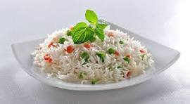

White Rice with Stew
- Wash rice thoroughly.
- Boil rice with salt until soft.
- Drain and keep aside.
- Blend tomatoes, peppers, onions.
- Heat oil in pot.
- Fry tomato mix until thick.
- Add seasoning cubes, curry, thyme.
- Add cooked beef or chicken.
- Pour in stock and simmer.
- Serve stew over white rice.
Serving Suggestion: Enjoy with fried plantain, boiled eggs, or a chilled soft drink.
Jollof Rice
- Wash and parboil rice, set aside.
- Blend tomatoes, red peppers, onions.
- Boil blended mix until thick.
- Heat oil, add sliced onions.
- Fry tomato mix in the oil.
- Add seasoning, curry, thyme, bay leaf.
- Pour in chicken stock or water.
- Stir in rice gently.
- Cover pot, cook on low heat.
- Fluff rice, serve with meat or plantain.
Serving Suggestion: Best served with grilled chicken, salad, and cold drinks at parties.
Fried Rice
- Wash and parboil rice.
- Boil rice in stock until almost done.
- Cut vegetables: carrot, peas, green beans.
- Dice chicken liver or beef.
- Heat oil in pan.
- Stir-fry vegetables and liver.
- Add curry and seasoning.
- Mix in cooked rice.
- Stir well until rice is colorful.
- Serve hot with chicken or fish.
Serving Suggestion: Pair with grilled prawns, roasted chicken, or moi moi.
Coconut Rice

- Wash and parboil rice, set aside.
- Break coconut, extract milk (or use canned).
- Blend onions, peppers (optional).
- Heat oil in a pot, add sliced onions.
- Fry blended mix until reduced.
- Add coconut milk and some stock.
- Season with curry, thyme, salt, cubes.
- Pour in the rice, stir gently.
- Cover and cook on low heat.
- Serve with fried fish, chicken, or plantain.
Serving Suggestion: Goes perfectly with fried fish, coleslaw, or spicy pepper sauce.